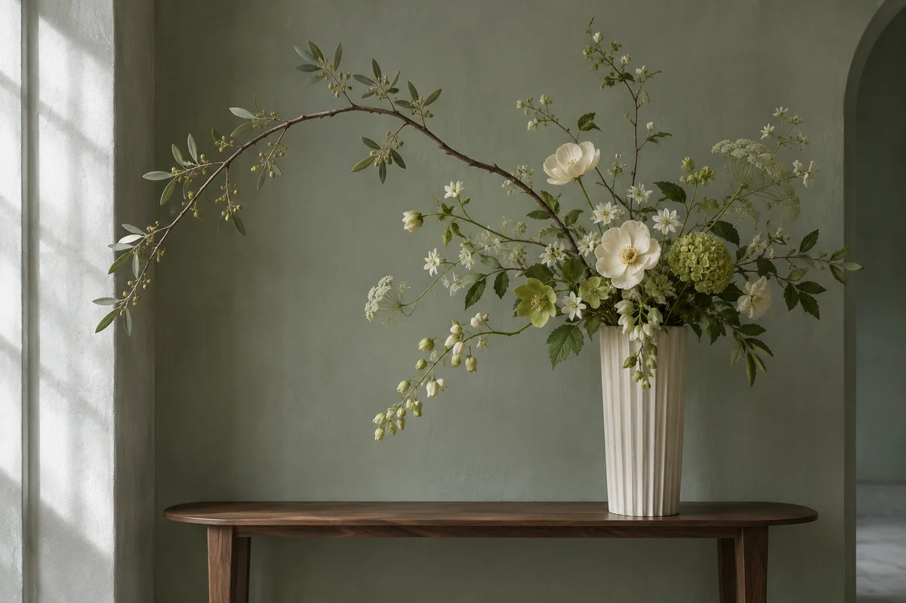
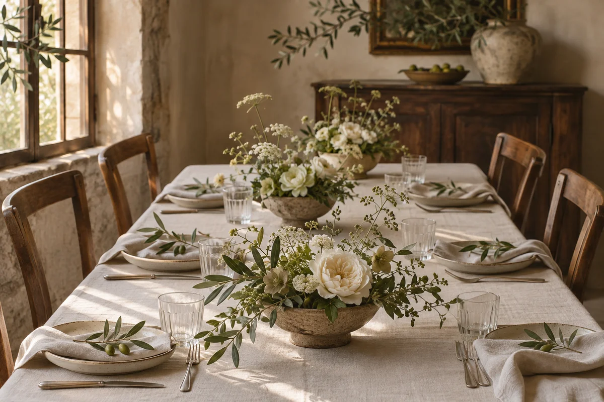
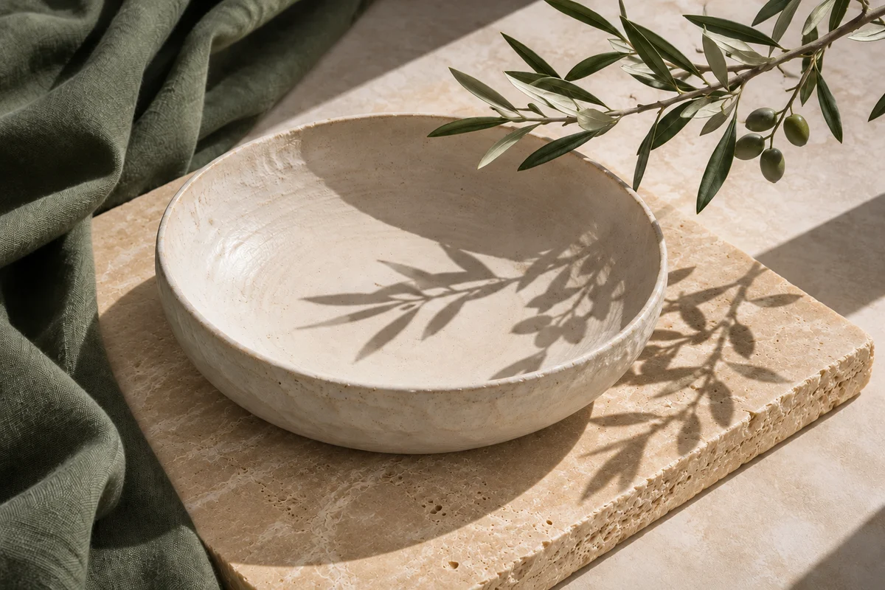

Sito dimostrativo
Servizi botanici
Tre modi di portare rami, foglie e fiori in uno spazio, seguendo la stagione e la luce del luogo.

Composizioni su misura
Partiamo dal luogo in cui sarà posato il vaso. Su una mensola stretta scegliamo pochi steli slanciati. Su un tavolo basso possiamo lasciare che i rami si allarghino.
Esempio Una composizione in ceramica per l’ingresso di casa.

Piccoli allestimenti
Per una tavola condivisa scegliamo recipienti bassi e lasciamo spazio tra le composizioni, così chi si siede può vedersi e passare i piatti con facilità.
Esempio Tre ciotole botaniche per una cena raccolta.

Styling botanico per set
Scegliamo rami e foglie in base all’inquadratura. Uno stelo può seguire il profilo di un oggetto o proiettare un’ombra sul fondo, lasciando il soggetto in evidenza.
Esempio Un ramo d’ulivo per fotografare una ciotola in ceramica.
Da dove partiamo
Lo spazio
Una foto, le misure del piano e l’ora in cui arriva la luce ci aiutano a capire quanto spazio può occupare la composizione.
L’occasione
Una tavola da usare durante la cena e una scena da fotografare chiedono altezze diverse. Il modo in cui si usa lo spazio guida la scelta del vaso.
La proposta
Accostiamo i materiali della stagione al recipiente e decidiamo dove far cadere l’accento: sul colore, sulla forma o sull’ombra.
Cosa preparare prima di parlarne
Per una composizione su misura
Una foto del punto in cui starà il vaso, la larghezza del piano e l’altezza disponibile. Se hai già un recipiente, tieni a portata di mano anche le sue misure.
Per un piccolo allestimento
La forma del tavolo, il numero di posti e il tipo di servizio. Se i piatti saranno condivisi al centro, sapere quanto spazio occupano aiuta a scegliere dove mettere i vasi.
Per un set fotografico
Una foto dell’oggetto da mettere in scena, il formato dello scatto e un riferimento per la luce. Sapere se l’immagine sarà verticale o orizzontale aiuta a orientare i rami.